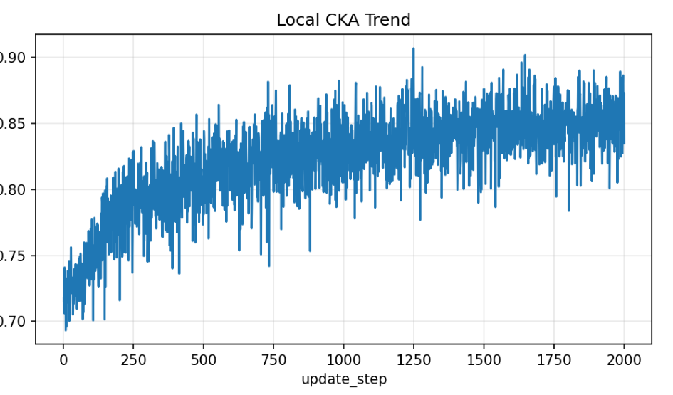
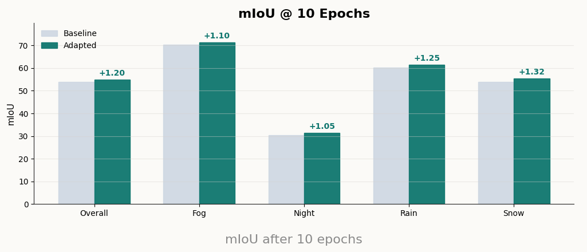

Page 2
Method and Quantitative Diagnostics
The model keeps the baseline segmentation path frozen and updates only a lightweight adapter and gate on stage 3 features. DINOv3 remains frozen and supplies the semantic prior for feature alignment.


